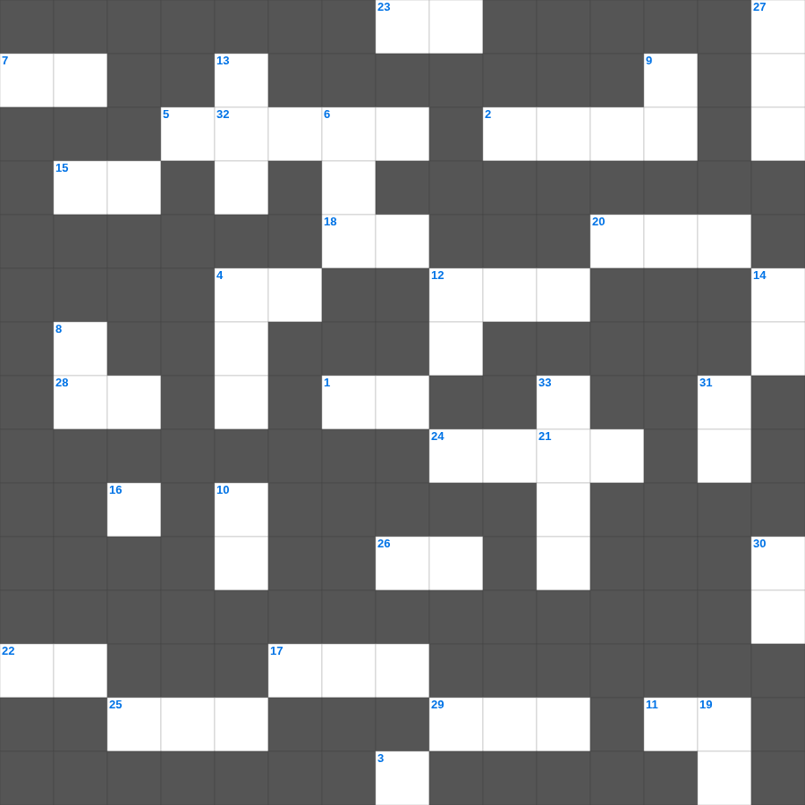

이사야 마스터 100 (2/2)
📌 서비스 정의
십자가로세로는 교회 주보와 주일학교에서 사용할 수 있는 성경 기반 가로세로 퍼즐 서비스입니다. 성경 인물, 사건, 핵심 구절을 바탕으로 제작되었습니다. 온라인 풀이 및 인쇄 기능을 제공합니다.
📖 이사야란?
이사야는 유다 왕국의 멸망 위기 속에서 심판과 회복, 그리고 메시아의 오심을 예언한 책으로, 신약에서 가장 많이 인용되는 예언서 중 하나입니다.
📚 이사야의 주요 사건·주제
이사야의 소명(이사야 6장) · 임마누엘 예언 · 고난받는 종의 노래(이사야 53장) · 바벨론 멸망 예언 · 새 하늘과 새 땅 예언
이사야의 말씀을 퀴즈로 배우는 이사야 성경퀴즈입니다. 가로 힌트와 세로 힌트를 보고 35개의 단어를 맞춰보세요. 인쇄도 가능하고 정답 확인도 바로 되니 소그룹 모임이나 가정 예배 시간에도 활용하실 수 있습니다.

📝 가로 힌트
1. 아들이 아버지의 죄악을 담당하지 아니할 것이요 아버지가 아들의 이것을 담당하지 아니하리니
2. 하나님의 이것함이 사람보다 지혜롭고 하나님의 약하심이 사람보다 강하니라
3. 우리가 약할 때에 너희가 강한 것을 기뻐하고 또 이것을 위하여 구하니 곧 너희가 온전하게 되는 것이라
4. 오네시모의 변화 후 상태를 나타내는 말
5. 계시록 7장: 인침을 받은 자의 수
7. 방언을 하는 자는 자기의 덕을 세우고 예언하는 자는 이것의 덕을 세우나니
11. 사랑은 율법의 이것이니라
12. 로마에 도착한 바울이 가장 먼저 만나 복음을 전한 사람들
15. 사람들이 이것의 선생이 되려 하나 자기가 말하는 것이나 확증하는 것도 깨닫지 못하는도다
17. 우리의 겉사람은 낡아지나 우리의 이것은 날로 새로워지도다
18. 너는 이와 같이 젊은 남자들을 신중하도록 이것하되
20. 그리스도 안에서 일만 스승이 있으되 이것은 많지 아니하니
22. 각처에서 남자들이 분노와 이것이 없이 거룩한 손을 들어 기도하기를 원하노라
23. 베드로의 신앙고백 직후 예수께서 처음으로 예고하신 것
24. 한 아이가 가져온 떡 다섯 개와 물고기 두 마리
25. 선을 행하는 자는 하나님께 속하고 악을 행하는 자는 하나님을 이것하지 못하였느니라
26. 아마 그가 잠시 떠나게 된 것은 너로 하여금 그를 영원히 이것하게 함이리니
28. 사람이 무슨 무익한 말을 하든지 심판 날에 이에 대하여 이것을 받으리니
29. 누구든지 나를 따라오려거든 자기를 부인하고 자기 이것을 지고 나를 따를 것이니라
📝 세로 힌트
4. 드로아에서 밤늦도록 강론할 때 창걸터에 앉아 졸다가 삼 층에서 떨어져 죽었다 살아난 청년
6. 고린도후서의 주요 집필 동기: 바울의 이것에 대한 변호
8. 깨끗한 자들에게는 모든 것이 깨끗하나 더럽고 믿지 아니하는 자들에게는 아무것도 깨끗한 것이 없고 오직 그들의 마음과 이것이 더러운지라
9. 내가 이것을 부끄러워하지 아니하노니 이 이것은 모든 믿는 자에게 구원을 주시는 하나님의 능력이 됨이라
10. 성령의 열매 세 번째
12. 우리는 너희 가운데서 유순한 자가 되어 이것이 자기 자녀를 기름과 같이 하였으니
13. 바울이 로마 교회를 방문하고자 했던 주된 이유: 신령한 이것을 나누어 주기 위함
14. 내 아들아 그러므로 너는 그리스도 예수 안에 있는 이것 가운데서 강하고
16. 내 이름을 멸시하는 제사장들아... 너희가 더러운 이것을 나의 제단에 드리고도
19. 너희 몸은 너희가 하나님께로부터 받은 바 너희 가운데 계신 이것의 전인 줄을 알지 못하느냐
21. 바울이 디모데에게 '이것'을 피하고 의와 경건을 따르라고 함
27. 바울이 빌레몬의 집 교회를 언급하며 부른 인물: 함께 군사 된 이것
30. 베드로에게 하신 말씀: 깊은 데로 가서 이것을 내려 고기를 잡으라
31. 너희의 넉넉한 것으로 그들의 부족한 것을 보충함은 후에 그들의 넉넉한 것으로 너희의 부족한 것을 보충하여 이것하게 하려 함이라
32. 그들이 교회 앞에서 너의 이것을 증언하였느니라
33. 요한이서 1장 12절: 무엇으로 쓰기를 원하지 않았나 (2가지 중 하나)
📖 함께 읽으면 좋은 성경사전
퍼즐을 풀기 전에 읽으면 힌트가 쉬워지고, 풀고 나서 읽으면 내용을 한 번 더 복습할 수 있습니다.
🧩 이 퍼즐에서 배우는 내용
이 퍼즐은 이사야 마스터 100 (2/2)의 핵심 단어와 개념을 자연스럽게 복습할 수 있도록 구성되었습니다. 주일학교 수업이나 개인 성경공부에서 학습 내용을 점검하는 용도로 바로 활용할 수 있습니다.
🧑🏫 교회 교육 자료 활용
이 퍼즐은 주일학교 교재 추천 자료로 활용할 수 있고, 주일학교 주보에 넣기 좋은 분량으로 구성되어 있습니다. 수업용 주일학교 교안에 활동지로 붙이거나, 예배 후 복습용 주일학교 공과교재로 바로 사용할 수 있습니다.
🏷️ 키워드
이사야 성경퀴즈, 이사야, 십자가로세로, 성경퀴즈, 말씀퀴즈, 가로세로퍼즐, 주일학교 교재 추천, 주일학교 주보, 주일학교 교안, 주일학교 공과교재